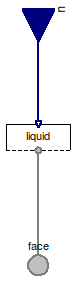

Table of Contents
- User's Guide
- BCs
- Sensors
- Assemblies**
- Regions**
- Subregions
- Connectors
- Characteristics
- Units
- Quantities
- BaseClasses
- **Please check back soon or contact kdavies4 at gmail.com.
Download
- Latest: FCSys-2.0.zip (**Check back soon.)

Since the connectors in FCSys are hierarchical (see the Connectors package), the models for the boundary conditions must be as well. A Face connector (FaceX, FaceY, or FaceZ) is used in Species models, and there is a corresponding Species boundary condition model in this package. The FaceBus connector is used in Phase models, and there are corresponding Phase boundary condition models. The FaceBus connector is nested once more in models such as the Subregion, and there is a corresponding Subregion boundary condition model.
Extends from Modelica.Icons.Package (Icon for standard packages).
| Name | Description |
|---|---|
| Subregion | BC for a face of a Region or Subregion model, with efforts by default |
| SubregionFlow | BC for a face of a Region or Subregion model, with flows by default |
| SubregionClosed | BC for a face of a Region or Subregion model, with efforts except closed by default |
| SubregionClosedAdiabatic | BC for a face of a Region or Subregion model, with flows except zero shear velocities by default |
| SubregionAdiabatic | BC for a face of a Region or Subregion model, with efforts except adiabatic by default |
| BCs for the FaceBus connector, e.g., of a Phase model (multi-species) |
 FCSys.BCs.FaceBus.Subregion
FCSys.BCs.FaceBus.Subregion
| Type | Name | Default | Description |
|---|---|---|---|
| Axis | axis | Axis.x | Axis normal to the face |
| Phases | |||
| Gas | gas | Gas | |
| Graphite | graphite | Graphite | |
| Ionomer | ionomer | Ionomer | |
| Liquid | liquid | Liquid | |
| Type | Name | Description |
|---|---|---|
| FaceBus | face | Connector for material, linear momentum, and heat of multiple species |
| RealInputBus | u | Bus of inputs to specify conditions |
model Subregion "BC for a face of a Region or Subregion model, with efforts by default" extends FCSys.BaseClasses.Icons.BCs.Single; parameter Axis axis=Axis.x "Axis normal to the face";Phases.Gas gas(final axis=axis) "Gas"; Phases.Graphite graphite(final axis=axis) "Graphite"; Phases.Ionomer ionomer(final axis=axis) "Ionomer"; Phases.Liquid liquid(final axis=axis) "Liquid"; FCSys.Connectors.FaceBus face "Connector for material, linear momentum, and heat of multiple species"; FCSys.Connectors.RealInputBus u "Bus of inputs to specify conditions"; equationconnect(gas.face, face.gas); connect(graphite.face, face.graphite); connect(ionomer.face, face.ionomer); connect(liquid.face, face.liquid); connect(u.gas, gas.u); connect(u.graphite, graphite.u); connect(u.ionomer, ionomer.u); connect(u.liquid, liquid.u); end Subregion;
FCSys.BCs.FaceBus.SubregionFlow
| Type | Name | Default | Description |
|---|---|---|---|
| Axis | axis | Axis.x | Axis normal to the face |
| Phases | |||
| Liquid | liquid | Liquid | |
| Type | Name | Description |
|---|---|---|
| FaceBus | face | Connector for material, linear momentum, and heat of multiple species |
| RealInputBus | u | Bus of inputs to specify conditions |
model SubregionFlow "BC for a face of a Region or Subregion model, with flows by default" extends FaceBus.Subregion( gas( H2( redeclare replaceable Face.Material.Current material, redeclare replaceable Face.Mechanical.Force mechanicalX, redeclare replaceable Face.Mechanical.Force mechanicalY, redeclare replaceable Face.Mechanical.Force mechanicalZ, redeclare replaceable Face.Thermal.HeatFlowRate thermal), H2O( redeclare replaceable Face.Material.Current material, redeclare replaceable Face.Mechanical.Force mechanicalX, redeclare replaceable Face.Mechanical.Force mechanicalY, redeclare replaceable Face.Mechanical.Force mechanicalZ, redeclare replaceable Face.Thermal.HeatFlowRate thermal), N2( redeclare replaceable Face.Material.Current material, redeclare replaceable Face.Mechanical.Force mechanicalX, redeclare replaceable Face.Mechanical.Force mechanicalY, redeclare replaceable Face.Mechanical.Force mechanicalZ, redeclare replaceable Face.Thermal.HeatFlowRate thermal), O2( redeclare replaceable Face.Material.Current material, redeclare replaceable Face.Mechanical.Force mechanicalX, redeclare replaceable Face.Mechanical.Force mechanicalY, redeclare replaceable Face.Mechanical.Force mechanicalZ, redeclare replaceable Face.Thermal.HeatFlowRate thermal)), graphite(C( redeclare replaceable Face.Material.Current material, redeclare replaceable Face.Mechanical.Force mechanicalX, redeclare replaceable Face.Mechanical.Force mechanicalY, redeclare replaceable Face.Mechanical.Force mechanicalZ, redeclare replaceable Face.Thermal.HeatFlowRate thermal), 'e-'( redeclare replaceable Face.Material.Current material, redeclare replaceable Face.Mechanical.Force mechanicalX, redeclare replaceable Face.Mechanical.Force mechanicalY, redeclare replaceable Face.Mechanical.Force mechanicalZ, redeclare replaceable Face.Thermal.HeatFlowRate thermal)), ionomer( C19HF37O5S( redeclare replaceable Face.Material.Current material, redeclare replaceable Face.Mechanical.Force mechanicalX, redeclare replaceable Face.Mechanical.Force mechanicalY, redeclare replaceable Face.Mechanical.Force mechanicalZ, redeclare replaceable Face.Thermal.HeatFlowRate thermal), H2O( redeclare replaceable Face.Material.Current material, redeclare replaceable Face.Mechanical.Force mechanicalX, redeclare replaceable Face.Mechanical.Force mechanicalY, redeclare replaceable Face.Mechanical.Force mechanicalZ, redeclare replaceable Face.Thermal.HeatFlowRate thermal), 'H+'( redeclare replaceable Face.Material.Current material, redeclare replaceable Face.Mechanical.Force mechanicalX, redeclare replaceable Face.Mechanical.Force mechanicalY, redeclare replaceable Face.Mechanical.Force mechanicalZ, redeclare replaceable Face.Thermal.HeatFlowRate thermal)));end SubregionFlow;
FCSys.BCs.FaceBus.SubregionClosed
| Type | Name | Default | Description |
|---|---|---|---|
| Axis | axis | Axis.x | Axis normal to the face |
| Phases | |||
| Liquid | liquid | Liquid | |
| Type | Name | Description |
|---|---|---|
| FaceBus | face | Connector for material, linear momentum, and heat of multiple species |
| RealInputBus | u | Bus of inputs to specify conditions |
model SubregionClosed "BC for a face of a Region or Subregion model, with efforts except closed by default" extends FaceBus.Subregion( gas( H2(redeclare replaceable Face.Material.Current material), H2O(redeclare replaceable Face.Material.Current material), N2(redeclare replaceable Face.Material.Current material), O2(redeclare replaceable Face.Material.Current material)), graphite(C(redeclare replaceable Face.Material.Current material), 'e-'( redeclare replaceable Face.Material.Current material)), ionomer( C19HF37O5S(redeclare replaceable Face.Material.Current material), H2O(redeclare replaceable Face.Material.Current material), 'H+'(redeclare replaceable Face.Material.Current material)));end SubregionClosed;
FCSys.BCs.FaceBus.SubregionClosedAdiabatic
| Type | Name | Default | Description |
|---|---|---|---|
| Axis | axis | Axis.x | Axis normal to the face |
| Phases | |||
| Liquid | liquid | Liquid | |
| Type | Name | Description |
|---|---|---|
| FaceBus | face | Connector for material, linear momentum, and heat of multiple species |
| RealInputBus | u | Bus of inputs to specify conditions |
model SubregionClosedAdiabatic "BC for a face of a Region or Subregion model, with flows except zero shear velocities by default" extends FaceBus.Subregion( gas( H2(redeclare replaceable Face.Material.Current material, redeclare replaceable Face.Thermal.HeatFlowRate thermal), H2O(redeclare replaceable Face.Material.Current material, redeclare replaceable Face.Thermal.HeatFlowRate thermal), N2(redeclare replaceable Face.Material.Current material, redeclare replaceable Face.Thermal.HeatFlowRate thermal), O2(redeclare replaceable Face.Material.Current material, redeclare replaceable Face.Thermal.HeatFlowRate thermal)), graphite(C(redeclare replaceable Face.Material.Current material, redeclare replaceable Face.Thermal.HeatFlowRate thermal), 'e-'(redeclare replaceable Face.Material.Current material, redeclare replaceable Face.Thermal.HeatFlowRate thermal)), ionomer( C19HF37O5S(redeclare replaceable Face.Material.Current material, redeclare replaceable Face.Thermal.HeatFlowRate thermal), H2O(redeclare replaceable Face.Material.Current material, redeclare replaceable Face.Thermal.HeatFlowRate thermal), 'H+'(redeclare replaceable Face.Material.Current material, redeclare replaceable Face.Thermal.HeatFlowRate thermal)));end SubregionClosedAdiabatic;
FCSys.BCs.FaceBus.SubregionAdiabatic
| Type | Name | Default | Description |
|---|---|---|---|
| Axis | axis | Axis.x | Axis normal to the face |
| Phases | |||
| Liquid | liquid | Liquid | |
| Type | Name | Description |
|---|---|---|
| FaceBus | face | Connector for material, linear momentum, and heat of multiple species |
| RealInputBus | u | Bus of inputs to specify conditions |
model SubregionAdiabatic "BC for a face of a Region or Subregion model, with efforts except adiabatic by default" extends FaceBus.Subregion( gas( H2(redeclare replaceable Face.Thermal.HeatFlowRate thermal), H2O(redeclare replaceable Face.Thermal.HeatFlowRate thermal), N2(redeclare replaceable Face.Thermal.HeatFlowRate thermal), O2(redeclare replaceable Face.Thermal.HeatFlowRate thermal)), graphite(C(redeclare replaceable Face.Thermal.HeatFlowRate thermal), 'e-'( redeclare replaceable Face.Thermal.HeatFlowRate thermal)), ionomer( C19HF37O5S(redeclare replaceable Face.Thermal.HeatFlowRate thermal), H2O(redeclare replaceable Face.Thermal.HeatFlowRate thermal), 'H+'(redeclare replaceable Face.Thermal.HeatFlowRate thermal)));end SubregionAdiabatic;